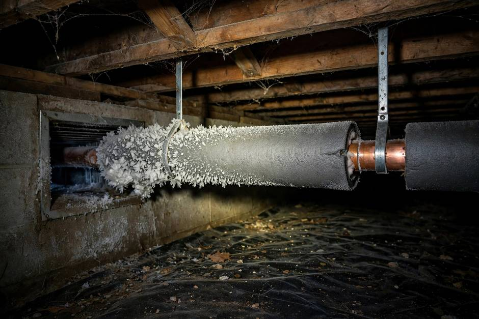

How to Prevent Frozen Pipes in Belleville, Illinois Winters
Cold periods in Belleville, Illinois, put exposed pipes at risk. This guide explains where freezing starts, how steady heat and simple protection help, and what to observe when water stops flowing.

Winter in Belleville, Illinois, brings long stretches of cold weather, and pipes in unheated areas face the greatest strain when temperatures stay low. Pipes that freeze can split, and the split often shows only when thawing begins and water moves again. Understanding where cold reaches plumbing helps homeowners act before damage spreads. Frozen and burst pipe repair covers what happens when prevention comes too late.
The prevention steps in this guide are household measures, such as managing heat and covering exposed runs. Plumbing work in Illinois is restricted under the Illinois Plumbing License Law (225 ILCS 320), and the homeowner exception covers single-family owner-occupant homes only. Work beyond household prevention belongs with a plumber, and this guide marks those limits as they arise.
What Belleville Winter Weather Means for Pipes
The Illinois State Water Survey summary for Belleville station 110510, using 1971-2000 normals with a station record running from 1948 to 2006, puts the January average high at 39.6°F and the January average low at 22.1°F. That vintage matters, because the figures describe an older normal period rather than a current measurement. Cold in Belleville is a sustained seasonal pattern, not a single night to endure.
The same station summary records about 100.3 days each year with a low at or below 32°F, a record low of -27°F on 17 January 1977, a median first fall occurrence of 32°F on 12 October, and a median last spring occurrence of 32°F on 12 April. Published snowfall totals for Belleville vary across sources and station periods, so this guide states no single snowfall total. The long cold season is the reason prevention starts before winter arrives.
Where Pipes Face the Cold
Pipes in exterior walls, crawl spaces, and unheated rooms lose heat to surrounding air, and outdoor faucets sit fully exposed to wind and cold. In older Belleville homes, supply runs may follow paths laid out when insulation standards differed, so cold can reach sections that look sheltered from inside the living space. A walk through basements, crawl spaces, and utility areas before winter shows where exposure is greatest.
Hose bibbs and attached garage runs deserve the same attention, because a short exposed section can freeze while the rest of the system stays warm. When a frozen section splits, water may stay hidden until thawing, when leak repair becomes the issue rather than prevention. Mapping exposed runs early gives each section the protection suited to its position.
- Exterior wall runs behind kitchen and bathroom fixtures
- Crawl space and basement runs near vents and openings
- Outdoor faucets and attached garage piping
Keeping the Home Heated Through Cold Periods
Steady heat inside the home is the simplest protection for pipes that run through walls and floors. Rooms with plumbing should stay heated through cold periods, including rooms that see little use, because closed doors and unused spaces cool more readily than lived-in rooms. Heat reaching wall cavities and floor runs keeps surrounding air above the point where standing water turns to ice.
When leaving home during winter, heat should stay on rather than being shut off for the trip. An empty house cools through walls, floors, and roof, and pipes in outer walls feel that cooling first. Arranging for someone to look in during a long absence adds a layer of observation, though it does not replace steady heat.
Protecting Exposed Pipes and Outdoor Faucets
Covering exposed pipes with insulation sleeves or wrapping suited to the run slows heat loss and helps during cold nights. Covers work well when they run the full exposed length without gaps, including bends and joints where cold air collects. Outdoor faucets need hoses removed before winter, so trapped water cannot sit against the faucet body and freeze in place.
Where an outdoor faucet has an indoor shutoff, closing that shutoff and draining the line through the outdoor faucet removes standing water from the exposed section. Not every home has that arrangement, and forcing a stiff valve can cause a leak, so a valve that resists turning is a reason to seek help rather than force. Protection fitted before the cold season avoids work in freezing conditions.
- Insulation sleeves fitted along full exposed runs
- Hoses removed from outdoor faucets before winter
- Indoor shutoffs closed where the home has them
What to Do When Water Stops Flowing
When a faucet gives no water during cold weather, a frozen section may be blocking flow. Opening the affected faucet relieves pressure and gives water a path once flow returns. Warming the frozen area gradually, with warm air directed at the pipe, is the general approach, and an open flame must never be used near pipes, insulation, or framing.
If water does not return, if a split is suspected, or if water appears where it should not, stop and call for help rather than continuing to warm the area. Shutting off water at the main shutoff limits damage while help is arranged. A split that stays hidden can release water through walls and floors once thawing completes, so early observation matters.
Shutoffs and Preparation Before a Cold Period
Knowing the main water shutoff location before winter saves time when a pipe splits, because water keeps flowing until the shutoff closes. Every household member old enough to act should know where the shutoff sits and how it turns. Plumbing repairs after a freeze often start with that shutoff, since stopping flow comes before any repair discussion.
Preparation also means checking that shutoff valves turn without forcing, that access to the shutoff stays clear, and that outdoor faucet arrangements are set before cold weather. A short check in early fall, ahead of the median first freeze date noted above, leaves room to arrange help for anything that resists or looks worn.
- Main shutoff location known to household members
- Shutoff access kept clear through winter
- Outdoor faucet setup checked in early fall
When to Call for Help With a Frozen Pipe
Call for help when water does not return after gradual warming, when a split is suspected, when water appears in walls or floors, or when a shutoff valve will not turn. Plumbing work in Illinois is restricted under the Illinois Plumbing License Law (225 ILCS 320), and the homeowner exception covers single-family owner-occupant homes only. Thawing that involves opening walls or working on supply lines belongs with a plumber.
Hinkle Plumbing Company can be reached at (618) 677-6556 during office hours, Monday through Friday, 8:00 AM to 4:30 PM. The office is closed Saturday and Sunday. Outside office hours, shutting off water at the main shutoff and keeping the home heated are the holding steps until office hours return, unless a gas smell or another utility hazard means calling the utility first.
Frequently Asked Questions
When does the freezing risk start in Belleville?
The Illinois State Water Survey summary for Belleville station 110510, using 1971-2000 normals, gives a median first fall occurrence of 32°F on 12 October. Medians describe the middle of the station record, not a date that holds every year. Preparation in early fall leaves room to protect exposed runs before cold periods arrive.
Should heat stay on during a winter trip?
Heat should stay on rather than being shut off for a winter trip. An empty house cools through walls, floors, and roof, and pipes in outer walls feel that cooling first. Keeping the home heated through the absence protects supply runs that sit in exterior walls and unheated spaces.
What should happen when one faucet stops giving water?
Open the affected faucet so pressure can relieve and water has a path once flow returns. Warm the frozen area gradually with warm air, and never use an open flame near pipes or framing. If water does not return, or if a split is suspected, stop and call for help rather than continuing.
Can a pipe split without showing water right away?
A split can stay hidden while ice blocks the opening, with water appearing only when thawing lets flow resume. Stains, damp patches, and water in unexpected places after a cold period deserve attention. Shutting off water at the main shutoff limits damage while the split is located and addressed.
Does a snowfall total predict pipe freezing?
Published snowfall totals for Belleville vary across sources and station periods, so no single total is stated in this guide. Freezing risk follows sustained cold, exposure of the pipe run, and heat reaching the surrounding space. Duration of cold and pipe position matter more than any single snowfall figure.
Get Help With Frozen Pipes in Belleville
For help with frozen pipes in Belleville, Illinois, call Hinkle Plumbing Company at (618) 677-6556 during office hours, Monday through Friday, 8:00 AM to 4:30 PM. The office at 1610 W Main St, Belleville, IL 62220, is closed Saturday and Sunday. Note which faucets lost water, when flow stopped, and whether any water has appeared where it should not.
Outside office hours, shutting off water at the main shutoff and keeping the home heated are the holding steps until office hours return. If a gas smell is present, leave the building and call Ameren Illinois at 1-800-755-5000 or 911 first. Do not use an open flame near pipes while waiting for help.